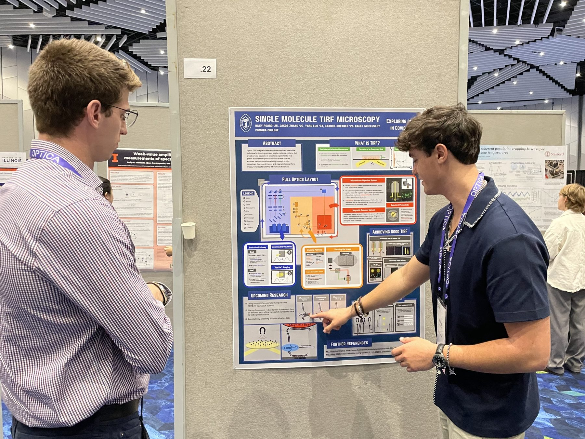
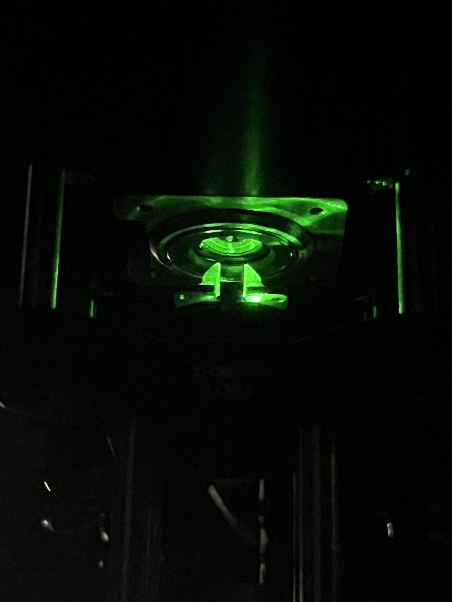
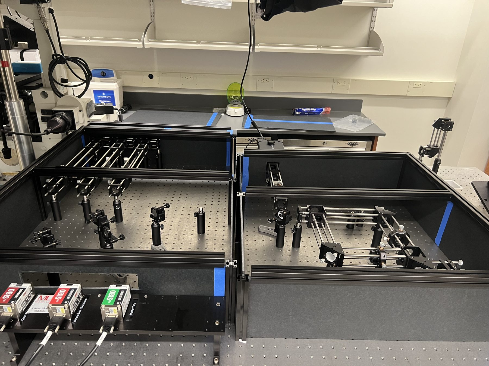
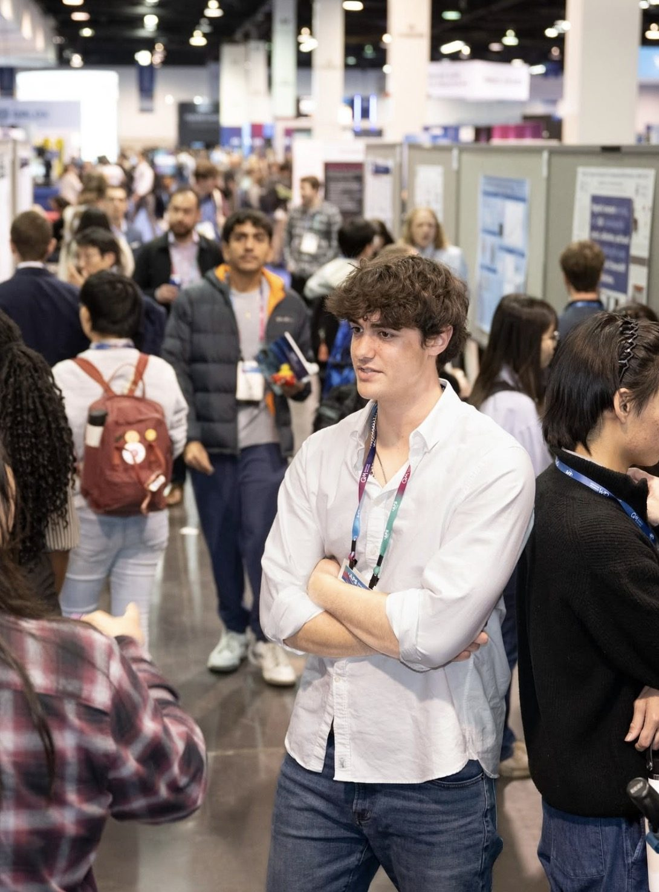

For roughly two and a half years at Pomona, I worked in Professor Kaley McCluskey’s biophysics lab studying the mechanical response of the SARS-CoV-2 mRNA frameshift element. My work ranged from optical hardware to machine-learning-driven computational modeling and molecular design.
I helped build a hybrid total internal reflection fluorescence (TIRF) microscope with magnetic tweezers and designed part of its optical recombination pathway. I also worked on stress modeling of the RNA pseudoknot and deep-learning-based phase-mask optimization to improve fluorescence measurements.
When the optical system was nearly ready, I volunteered to design a molecular construct for the experiments, despite having little recent biology experience. I developed a hybrid DNA–mRNA construct with fluorescent markers and a fabrication plan.
I presented the work at Optica’s 2024 Frontiers in Optics/Laser Science conference and the 2025 APS Global Physics Summit. It was an unusual path into engineering, but an excellent lesson in multidisciplinary research.


